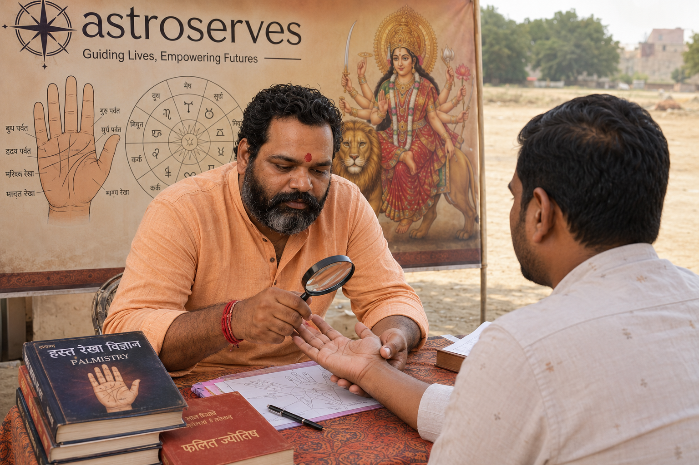
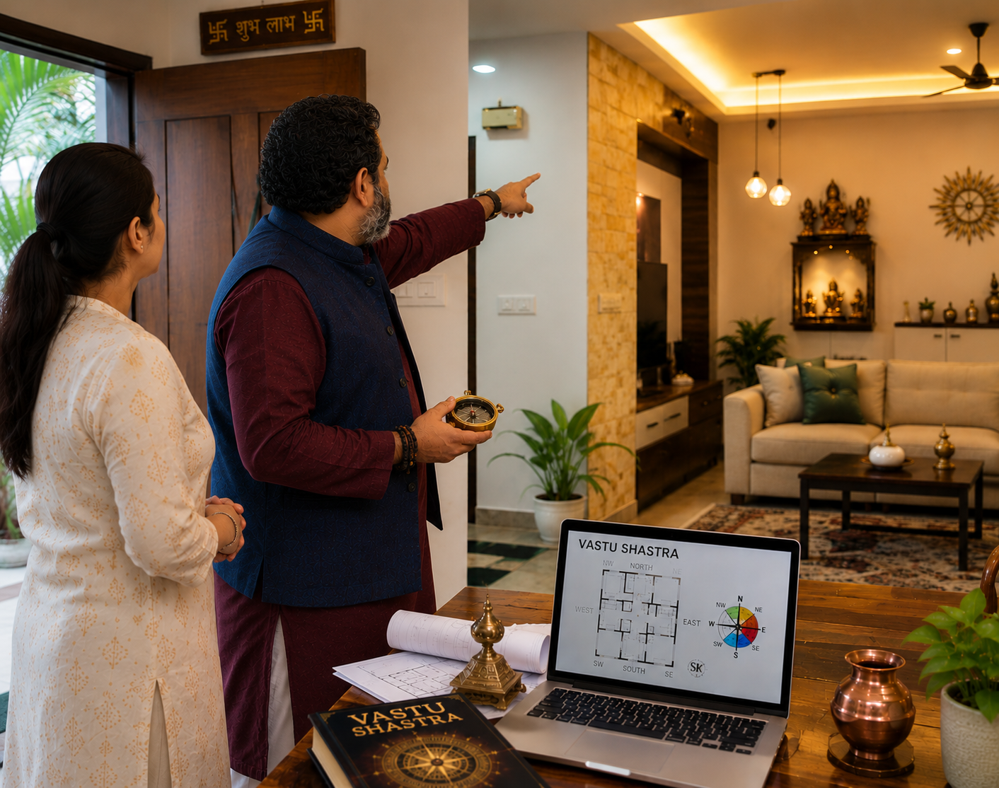
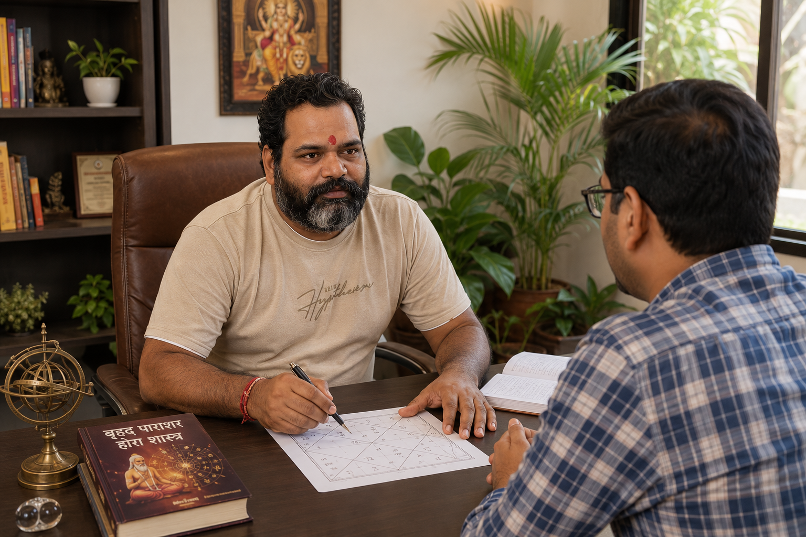

"Acharya Anuj provided accurate guidance for our home vastu and helped us feel more peaceful and confident. Highly recommended."
Astroserves — Spiritual Guidance & Vastu Healing
Acharya Anuj
Astrology • Vastu • Astroserves Expertise
Astroserves by Acharya Anuj provides accurate guidance for career, marriage, business, health, vastu, and spiritual solutions.
Trusted Spiritual Advisor
Personalized Vedic Remedies

1000+
Consultations Delivered
24/7
Online & Offline Help
About Astroserves
Experienced Astrologer & Vastu Consultant
Astroserves is led by Acharya Anuj, an experienced astrologer and vastu consultant providing guidance through Vedic Astrology, Vastu Shastra, Janampatri Analysis, Pooja & Karmkand Services, and spiritual remedies for a peaceful and successful life.
15 Years
Experience
Decades of trusted astrological and vastu guidance for modern Indian families and businesses.
5000+
Satisfied Clients
Trusted by thousands of individuals and families for accurate astrology and vastu guidance.
Online & Offline
Service Reach
Accessible support through both digital consultations and in-person vastu visits.
Personalized
Guidance
Custom solutions for career, marriage, business, health, and spiritual well-being.
Services
Astrology, Vastu, Pooja & Spiritual Services
Comprehensive services designed to bring balance, prosperity, and clarity to your life.
Why Choose Us
Trusted Guidance With Spiritual Insight
Choose wisdom backed by Vedic tradition, practical vastu knowledge, and compassionate support.
Accurate Guidance
Precise readings aligned with your life goals and planetary influences.
Vedic Knowledge
Deep understanding of ancient scriptures, yoga, and auspicious timings.
Personalized Solutions
Practical rituals, vastu corrections, and spiritual remedies tailored to you.
Online & Offline Support
Choose convenient digital sessions or in-person consultations.
Spiritual Remedies
Effective remedies for dosha relief, protection, and inner peace.
Trusted Consultation
Confidential, respectful, and honest guidance for every seeker.
Confidential Discussion
Your questions and personal concerns are treated with care and privacy.
Quick Response
Fast follow-up and actionable advice when you need it most.
Testimonials
What Seekers Say
Real experiences from families, professionals, and spiritual aspirants.
"His career astrology session helped me choose the right path at a difficult time. Very insightful and compassionate."
"The Muhurat consultation for our wedding was flawless. Everything went smoothly with perfect timing."
Gallery
Spiritual Moments & Services
Visual glimpses of poojas, kundli consultation, vastu visits and meaningful rituals.
 Pooja
Pooja
Kundali/Janmpatri

Palmistry
Vastu Consultation
Astrology Consultation
Contact
Connect With Acharya Anuj
Reach out to receive personalized guidance, book a consultation, or ask a spiritual question.
Acharya Anuj
Astrology & Vastu Consultant
FAQ
Frequently Asked Questions
Answers to common questions about astrology, vastu, and spiritual consultations.
Use the Call Now button or WhatsApp message to book your preferred time and service.
Yes, online consultations are available through video, phone, and chat for clients worldwide.
Every guidance plan is customized based on your birth chart, vastu evaluation, and life challenges.